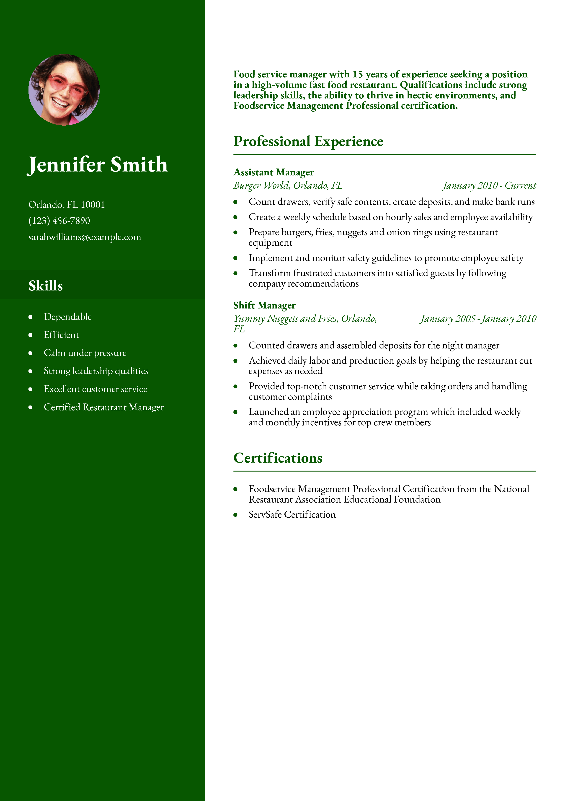

Welcome to Resume Builder & Analyzer Platform!!
Creating a professional resume has never been easier! With our Resume Builder, you can quickly craft a polished and ATS-friendly resume using pre-designed templates. Simply fill in your details, preview your resume in real time, and download it as a PDF in just a few clicks.
Want to improve your existing resume? Our Resume Analyzer helps you optimize your resume by analyzing its content, identifying key skills, and suggesting improvements to increase your chances of landing your dream job.
Want to improve your existing resume? Our Resume Analyzer helps you optimize your resume by analyzing its content, identifying key skills, and suggesting improvements to increase your chances of landing your dream job.
Start building your career today!
